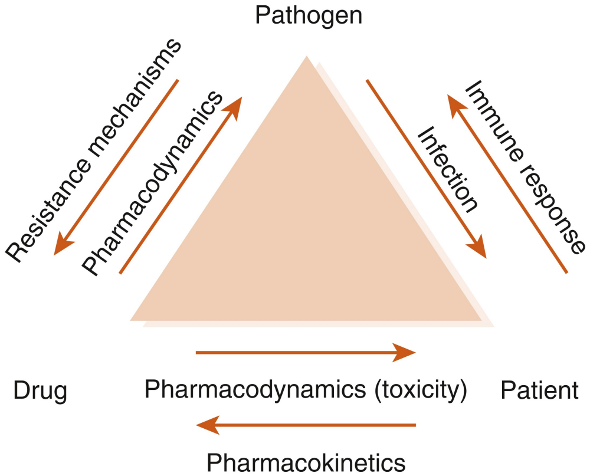
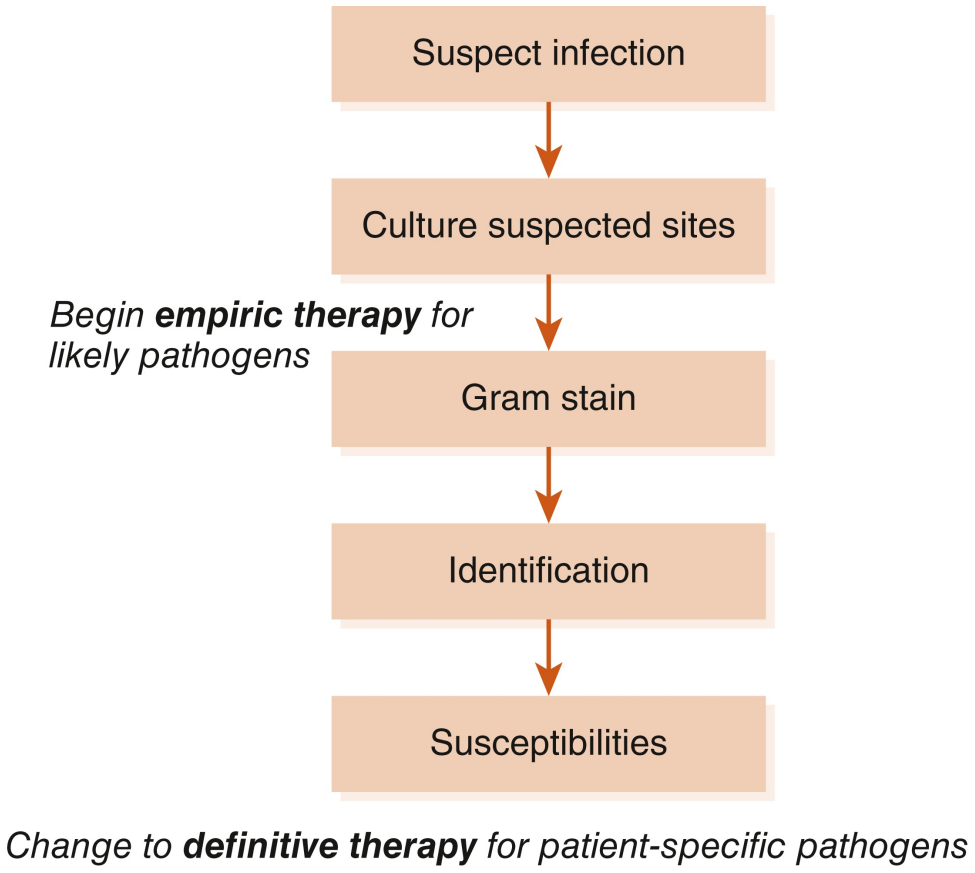

010200 General Approach to Infectious Diseases
The pharmacotherapy of infectious diseases is unique. In the pharmacotherapy of most diseases, we give drugs that have some desired pharmacologic action at some receptor or protein in the patient. To treat infections, we give antibiotics to exert a desired pharmacologic effect on the organism that is causing infection in the patient. With few exceptions, direct effects on the patients from antibiotics are not desired and are adverse effects. It is the third point in the triangle of infectious diseases pharmacotherapy - the pathogen - that makes each infection in each patient unique (Figure 1). The fact that the pharmacotherapy of infectious diseases involves organisms that change and “fight back” confuses many clinicians, but the approach to the patient with an infection is relatively simple and consistent. Understanding this approach is the first step in developing a useful expertise in infectious diseases and antibiotic use.

Note: Technically the term antibiotic refers only to a subset of antibacterial drugs that are natural products. The terms antiinfective and antimicrobial encompass antibacterial, antifungal, antiviral, and antiparasitic drugs. However, because antibiotic is the more commonly used term, we will use it to refer to antimicrobials in general or antibacterials specifically.
Prophylactic Therapy
The use of antimicrobial chemotherapy - that is, the treatment of microorganisms with chemical agents - falls into one of three general categories: prophylaxis, empiric use, and definitive therapy. Prophylaxis refers to antibiotics given to prevent an infection that has not yet developed. Use of prophylactic therapy should be limited to patients at high risk of developing an infection, such as those on immunosuppressive therapy, those with cancer, or patients who are having surgery. These patients have weakened natural defenses that render them susceptible to infection. Because the likelihood of infection by some types of organisms in these patients is high and the consequences of infection are dire, we administer antimicrobial drugs to prevent infections from occurring. However, the world is not sterile, and breakthrough infections do occur among patients receiving prophylaxis. The key to understanding antimicrobial prophylaxis is to remember that patients who receive it do not have an infection, but they are at risk for one. It is also the exception, not the rule - most people do not receive antimicrobial prophylaxis against most infections.
Empiric Therapy
Empiric therapy is given to patients who have a proven or suspected infection, but the responsible organism(s) has or have not yet been identified. It is the type of therapy most often initiated in both outpatient and inpatient settings. After the clinician assesses the likelihood of an infection based on physical exam, laboratory findings, and other signs and symptoms, he or she should generally collect samples for culture and Gram staining. For most types of cultures, the Gram stain is performed relatively quickly. In the Gram stain, details about the site of presumed infection are revealed, such as the presence of organisms and white blood cells (WBCs), morphology of the organisms present (e.g., gram-positive cocci in clusters), and the nature of the sample itself, which in some cases indicates if the sample is adequate. The process of culturing the sample begins around the time that the clinician performs the Gram stain. After a day or so, testing will reveal the identification of the organism, and eventually the organism can be tested for its susceptibility to various antibiotics.
However, this process takes several days, so empiric therapy is generally initiated before the clinician knows the exact identification and susceptibilities of the causative organism. Empiric therapy is our best guess of which antimicrobial agent or agents will be most active against the likely cause of infection. Sometimes we are right, and sometimes we are wrong. The significance of making a correct guess differs depending on the severity of the infection; a wrong choice for an uncomplicated urinary tract infection (UTI) results in an annoyed patient, whereas the wrong choice for meningitis is fatal. Keep in mind that empiric therapy should not be directed against every known organism in nature - just those that cause the infection in question. In other words, broad-spectrum antibiotics are not a substitute for rational thought!
Definitive Therapy
After culture and sensitivity results are known, the definitive therapy phase of treatment can begin. Unlike empiric therapy, with definitive therapy we know on what organisms to base our treatment and which drugs should work against them. At this phase, it is prudent to choose antimicrobial agents that are safe, effective, narrow in spectrum, and cost-effective. This helps us avoid unneeded toxicity, treatment failures, and the possible emergence of antimicrobial resistance; it also helps manage costs. In general, moving from empiric to definitive therapy involves decreasing the spectrum of coverage, because we do not need to target organisms that are not causing infection in our patient. In fact, giving overly broad-spectrum antibiotics can lead to the development of superinfections: infections caused by organisms resistant to the anti-biotics in use that occur during therapy.
The clinician who is treating an infected patient should always strive to make the transition to definitive therapy. Although it seems obvious, this frequently does not occur. If the patient improves on the first antibiotic, clinicians may be reluctant to transition to more narrowspectrum therapy. Also, some infections may resolve with empiric therapy before culture results would even be available, as frequently happens with uncomplicated UTIs. In other cases, cultures may not be obtained or may be negative in spite of strong signs that the patient has an infection (e.g., clinical symptoms, fever, increased WBC count). Outpatient clinicians frequently skip the culture collection step, begin empiric therapy, and wait to see what happens. This may be because of time pressures or the perceived cost and inconvenience of obtaining cultures in patients with low-acuity infections. In many situations it is important that clinicians continuously consider the need to transition to definitive therapy. Overly broad-spectrum therapy has consequences, and the next infection is likely to be harder to treat. Excessive empiric antibiotic use is a big part of the reason there is an antimicrobial resistance crisis. Keep in mind the general pathway for the treatment of infectious diseases shown in Figure 2.

Examples of Therapy
Here are a few examples of each type of therapy:
Prophylaxis Therapy
Trimethoprim/sulfamethoxazole (TMP/SMX) to prevent Pneumocystis jirovecii pneumonia in a patient on cyclosporine and prednisone after a liver transplant
Letermovir to prevent CMV infection in a patient who received a stem cell transplant
Cefazolin given before surgery to prevent a staphylococcal skin infection of the surgical site
Empiric Therapy
Levofloxacin initiated for a patient with presumed community-acquired pneumonia
Ceftriaxone given for the treatment of suspected pyelonephritis
Voriconazole initiated for a neutropenic bone marrow transplant patient with shortness of breath and a radiograph suggestive of pulmonary aspergillosis
Vancomycin, tobramycin, and meropenem for a patient with probable ventilator-associated pneumonia in the intensive care unit
Definitive Therapy
Transitioning from piperacillin/tazobactam to ampicillin in a patient with a wound infection caused by Enterococcus faecalis, which is susceptible to both drugs
Discontinuing ceftriaxone and initiating ciprofloxacin for a patient with a UTI caused by Klebsiella pneumoniae that is resistant to ceftriaxone but susceptible to ciprofloxacin
Stopping caspofungin and initiating fluconazole for an improving patient with Candida in a blood isolate when the species is identified as Candida albicans (which is generally susceptible to fluconazole)
Narrowing therapy from vancomycin, ciprofloxacin, and meropenem to linezolid alone for a patient with hospital-acquired pneumonia whose deep respiratory culture grew only methicillin-resistant Staphylococcus aureus (MRSA) that is susceptible to linezolid
Case Study
Here is an example of treating a patient with an infection by the above pathway:
TR is a 63-year-old man with a history of diabetes, hypertension, and coronary artery disease who comes to the hospital complaining of pain, redness, and swelling around a wound on his foot. Close inspection reveals that he has an infected diabetic foot ulcer. He is admitted to the hospital (Day 1). A surgeon performs surgical debridement that evening and sends cultures from the wound during surgery as well as blood cultures. Another clinician initiates empiric therapy with vancomycin and ertapenem.
On Day 2, Gram stain results from the wound are available. There are many WBCs with many gram-positive cocci in clusters but no gram-negative rods (GNRs), so the clinician discontinues ertapenem. Blood cultures do not grow any organisms.
The following day (Day 3), culture results from the wound reveal many S aureus. Because vancomycin is usually effective against this organism, its use is continued.
On Day 4, susceptibility results from the wound culture return. The S aureus is found to be susceptible to methicillin, oxacillin, cefazolin, clindamycin, TMP/SMX, and vancomycin. It is resistant to penicillin, ampicillin, tetracycline, and levofloxacin. Because the isolate from TR’s wound is methicillin-susceptible S aureus (MSSA), the clinician discontinues vancomycin and initiates definitive therapy with cefazolin. As TR improves towards discharge, the cefazolin is changed to oral cephalexin.
Note how in TR’s case we began empiric therapy with a broad-spectrum regimen of vancomycin and ertapenem to cover the gram-positive and gram-negative aerobes and anaerobes that tend to cause diabetic foot infections but narrowed that therapy over time as Gram stain and culture data returned. Eventually we were able to choose a highly effective, narrow-spectrum, inexpensive, and safe choice of definitive therapy that was driven by microbiology results. Both vancomycin and ertapenem were active against TR’s S aureus as well, but both represent less-ideal therapy choices, as ertapenem is broader in spectrum and vancomycin’s anti-MRSA activity is not needed. Note: Ertapenem and cephalexin’s activity against this isolate is inferred from the susceptibility pattern even though susceptibility to these agents was not tested directly.
A Note on Rapid Diagnostics
Novel ways to determine the identification of microorganisms are making their way into clinical practice. Identification of bacteria rapidly by mass spectroscopy has become common in microbiology laboratories, decreasing time from isolation to identification. Techniques that do not rely on culturing and the inherent delay that it represents are already commonly used to detect and quantify many viruses, such as polymerase chain reactions (PCR). These and other techniques are being used to identify other pathogens as well, such as strains of Candida (to determine likely fluconazole susceptibility), Clostridioides difficile, and even MRSA. As these technologies permeate clinical microbiology labs, hopefully the delays to effective therapy that current gold-standard culture and susceptibility testing cause will vanish.